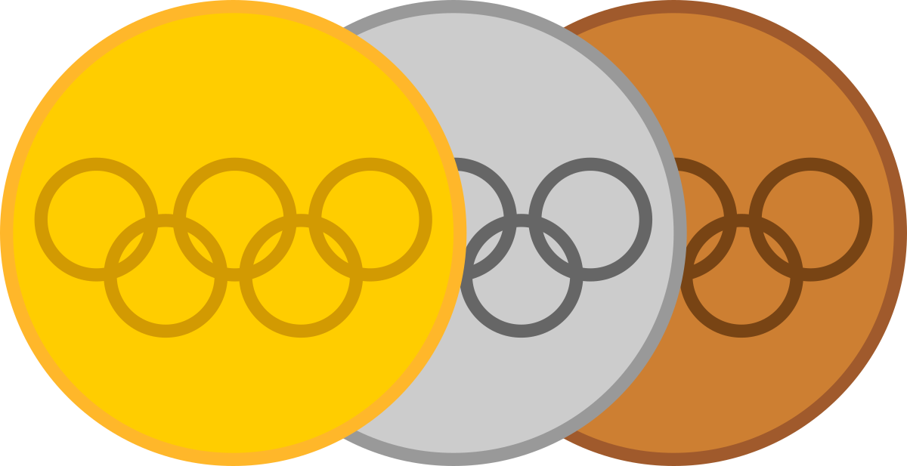

O pentatlo moderno, surgiu na Grécia Antiga e era utilizado pelos espartanos para selecionar os melhores soldados para lutarem nas guerras. O esporte foi inserido nos Jogos da Antiguidade, um festival de cunho religioso e atlético em homenagem ao deus mitológico Zeus, e consistia em provas de salto, lançamento, corrida e luta. No final do século XIX, um oficial sueco adaptou o esporte para uma simulação militar onde um soldado grego precisava entregar uma mensagem atrás das linhas inimigas, o desafio consististia em uma prova de hipismo, seguida de tiro, esgrima, natação, terminando, então, com a corrida. O esporte somente foi incluído nas Olimpíadas em 1912, porém, até os dias atuais ainda não possui tanta popularidade como as demais modalidades. Algumas décadas depois, em 1996, houve outra mudança significativa na competição, os atletas passariam a cumprir todas as provas em um único dia, visando tornar tal esporte mais dinâmico e atrativos aos espectadores.
nos Jogos Olímpicos
| Ordem | País |  |
 |
 |
 |
|---|---|---|---|---|---|
| 1 | Hungria | 9 | 8 | 5 | 22 |
| 2 | Suécia | 9 | 7 | 5 | 21 |
| 3 | União Soviética | 5 | 5 | 5 | 15 |
| 4 | Rússia | 4 | 1 | --- | 5 |
| 5 | Polônia | 3 | --- | 1 | 4 |
| Total | 27 | 21 | 15 | 63 | |

Entre os atletas extremamente talentosos que tiveram a chance de se destacar no cenário olímpico em 1952 estava Lars Hall, um carpinteiro da Suécia que conquistou o título mundial em 1950 e 1951 e chegou a Helsinque como favorito ao ouro. Ele começou com a vitória no cross-country, em parte graças a um pouco de sorte. O primeiro cavalo que lhe foi atribuído revelou-se manco e quando lhe foi atribuído um substituto, revelou-se o melhor cavalo da competição. A esgrima foi um desafio maior, com Hall superado pela dupla húngara de Gábor Benedek e István Szondy e caindo para o segundo lugar na classificação. O sueco também lutou no arremesso, terminando apenas em 15º e vendo seus dois rivais húngaros subirem para as posições de medalha de ouro e prata. Ele teve sorte de ter permanecido na competição. Hall chegou atrasado ao tiroteio e teria sido desclassificado se não fosse por outro golpe de sorte. Quando ele chegou, a seleção soviética se envolveu em um protesto que atrasou o início da competição. Sem esse atraso, Hall teria sido expulso. Talvez estimulado por esse pouco de sorte, Hall dominou a natação, vencendo seu rival mais próximo por mais de seis segundos, com a dupla húngara fora do ritmo. A vitória do sueco na água foi tão enfática que ele disparou para se juntar à liderança da classificação, ao lado de Szondy. Tudo se resumia ao evento de corrida. Hall sabia que era mais rápido que Szondy e que, desde que Benedek não o vencesse por uma margem enorme, o ouro seria dele. No final, ele jogou de forma inteligente. Benedek foi o próximo, subindo para o segundo lugar geral, enquanto Hall terminou em oitavo e Szondy em um distante 17º, deixando-o na posição da medalha de bronze. A vitória de Hall foi garantida e ele se tornou o primeiro civil a ser coroado campeão olímpico de pentatlo.


Conheça os nossos integrantes
Sara Cristina
Caloura na UCB, tenho me descobrido no curso de Engenharia de Software, e amado, principalmente, minhas aulas de Front-End
Renata Aguiar
Caloura na UCB, o curso de Engenharia de Software me possibilitou enxergar com outros olhos o universo da programação
Nosso travado foi desenvolvido na linguagem de HTML e estilizado na linguagem de CSS. Ele tem como objetivo expor conhecimentos acerca da modalidade olímpica: Pentatlo Moderno. Nesse site, você poderá encontrar um breve resumo de cada etapa do pentatlo, além de algumas curiosidades sobre o assunto.